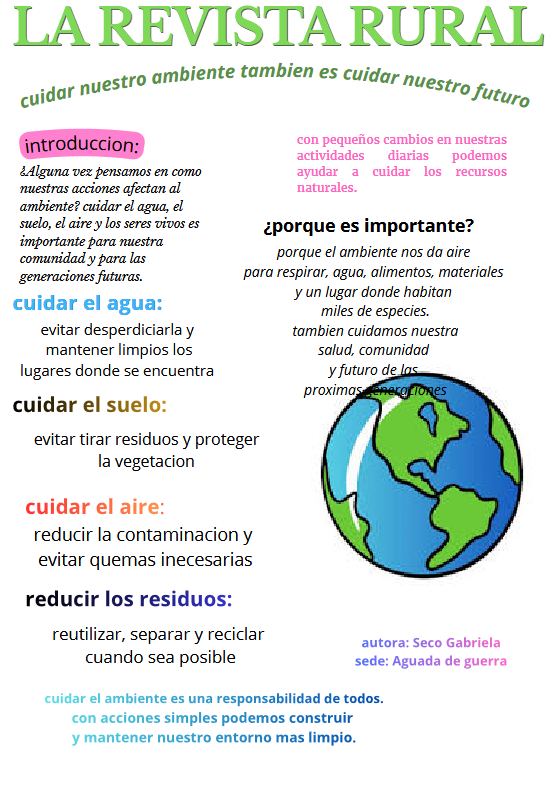

¿Alguna vez pensamos en cómo nuestras acciones afectan el ambiente? Cuidar el agua, el suelo, el aire y los seres vivos es importante para nuestra comunidad y para las generaciones futuras.
Cuidar el agua
Evitar desperdiciarla y mantener limpios los lugares donde se encuentra.
Cuidar el suelo
Con pequeños cambios en nuestras actividades diarias podemos ayudar a cuidar los recursos naturales. Evitar tirar residuos y proteger la vegetación.
Cuidar el aire
Reducir la contaminación y evitar quemas innecesarias.
Reducir los residuos
Reutilizar, separar y reciclar cuando sea posible.
¿Por qué es importante?
Porque el ambiente nos da aire para respirar, agua, alimentos, materiales y un lugar donde habitan miles de especies. También cuidamos nuestra salud, comunidad y el futuro de las próximas generaciones.
Cuidar el ambiente es una responsabilidad de todos. Con acciones simples podemos construir y mantener nuestro entorno más limpio.